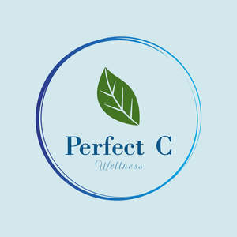

Trade Mark Journal No.2025/018 2 May 2025
UK00004180671 27 March 2025 (3,10,25,27,28,35)

- Class 3
- Yoga mat cleaning sprays; disinfecting and deodorising sprays for yoga mats; eco-friendly yoga mat cleaners; Yoga mat wipes; antibacterial and biodegradable wipes for cleaning yoga mats and equipment; Essential oils for relaxation, meditation, and focus; aromatherapy oils for yoga and wellness; Room and linen sprays for calming, energising, and meditation purposes; Massage oils and balms for muscle relaxation, stress relief, and post-yoga recovery; .
- Class 10
- Acupressure Mats and Pillows; Massage Balls (foam, spiky, peanut-shaped); Foam Rollers (high-density, vibrating).
- Class 25
- Yoga Clothing: Yoga pants, leggings, shorts, capris, tops, tank tops, T-shirts, long-sleeve shirts, hoodies, jackets, and sports bras; Yoga Footwear: Yoga socks (non-slip, grip-enhanced), yoga gloves (grip support, wrist support); Headwear & Accessories: Headbands, sweatbands, and caps.
- Class 27
- Yoga Mats (standard, eco-friendly, travel, alignment-guide).
- Class 28
- Yoga Blocks (foam, cork, bamboo); Yoga Straps (cotton, nylon, adjustable); Yoga Wheels (small, medium, large); Yoga Bolsters and Knee Pads; Resistance Bands (loop, fabric, various strengths); Balance and Stability Aids (balance boards, stability cushions); Complete Yoga Kits (beginner, advanced, travel sets).
- Class 35
- Retail and online store services connected with the sale of yoga mats, resistance bands, massage balls, yoga blocks, straps, wheels, bolsters, knee pads, acupressure mats, foam rollers, herbal compress balls, yoga apparel, and related accessories; Wholesale distribution of yoga and fitness equipment, sportswear, and wellness products. Advertising, marketing, and promotional services for yoga products, fitness gear, and sportswear. Brand development and business consultancy for yoga, fitness, and wellness-related products.
PERFECT C LTD